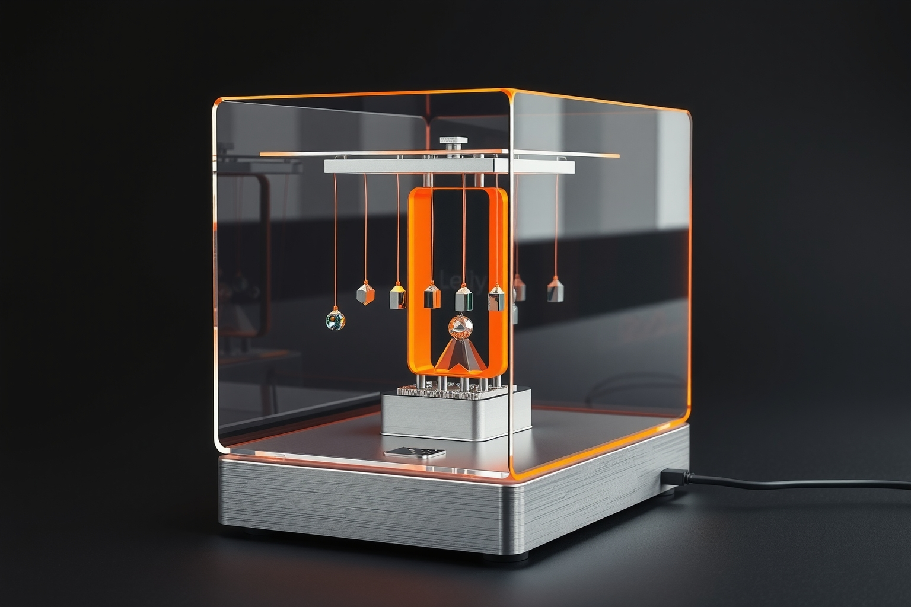
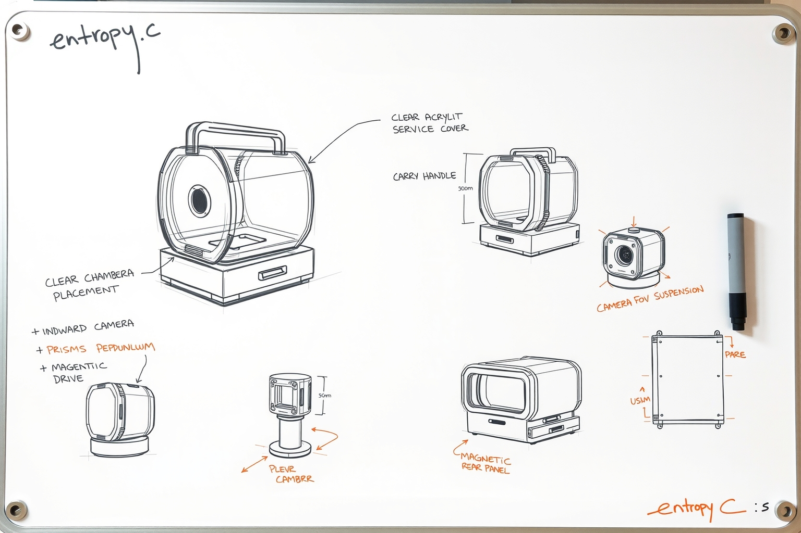
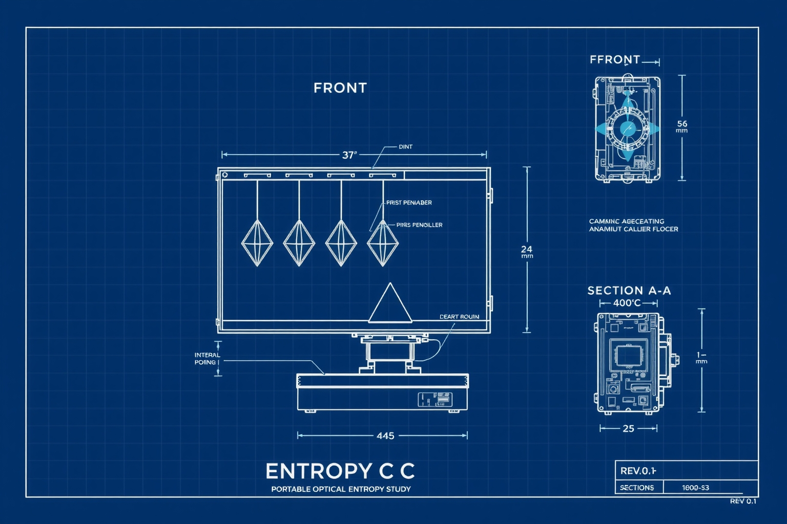
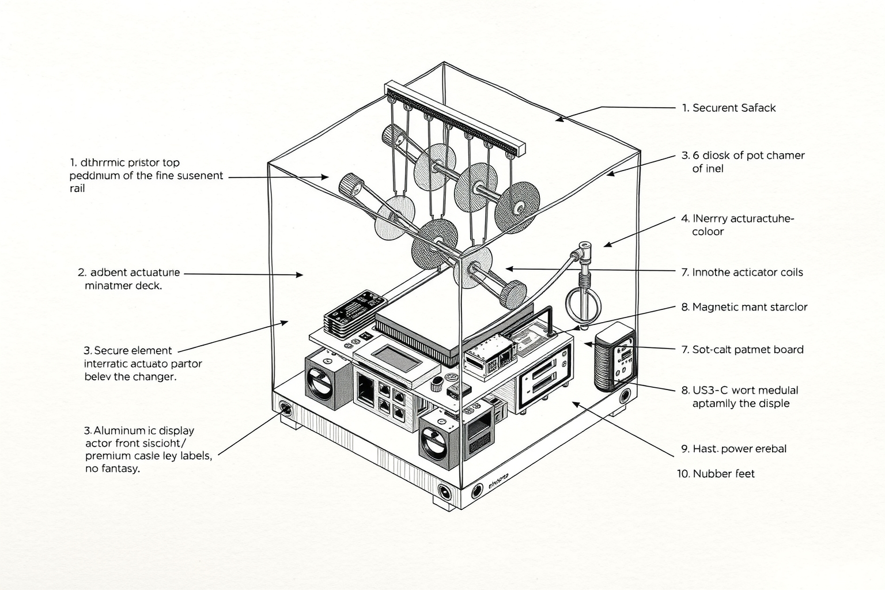

Industrial design exploration · Rev 0.1
entropy c
Four visual languages for a portable optical entropy experiment: product visualization, whiteboard ideation, engineering blueprint, and technical ink cutaway.

01 — Product visualization
Clear optical chamber, restrained orange illumination, embedded status display, carry handle, and plausible tabletop scale.

02 — Whiteboard study
Form, service access, suspension, camera field of view, and portability explored as an industrial-design sheet.

03 — Blueprint
Orthographic packaging study for the chamber, actuators, controller, ports, cable routing, and handle.

04 — Ink cutaway
A quieter technical illustration emphasizing assembly logic and the relationship between optics, sensing, actuation, and compute.